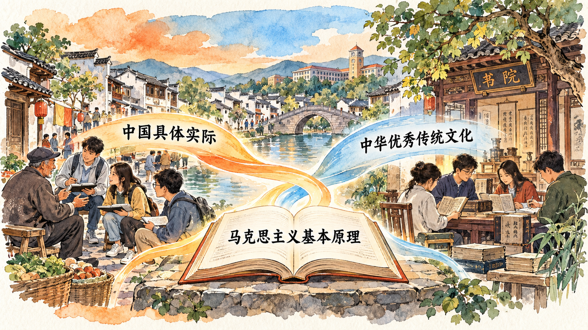

实践问题怎样进入理论创新
第一节说明思想形成的时代条件，本节进一步研究理论怎样回应实践。面对现实问题，仅有一般原则还不够，还需要认识问题所处的具体条件；仅有零散经验也不够，还需要运用理论认识经验之间的联系。两个结合正是在这一关系中展开。
教材指出：习近平新时代中国特色社会主义思想是马克思主义基本原理同中国具体实际相结合、同中华优秀传统文化相结合的重大成果，是坚持“两个结合”的光辉典范。
理解这句话，要抓住基本原理、具体实际与文化根基之间的联系。基本原理提供认识和改造世界的立场观点方法，具体实际提出需要解决的问题，中华优秀传统文化则构成理论扎根中国的重要历史文化基础。
为什么必须同中国具体实际相结合
理论用于实践，并不是给实际问题贴上现成标签。首先要弄清问题是什么、涉及哪些关系、受到什么条件制约，才能进一步运用理论作出分析。忽略条件变化，同一句结论就可能被机械套用；停留在现象描述，又难以形成对规律的认识。
教材指出：“马克思主义理论不是教条，而是行动指南。”这句话要求我们同时理解坚持理论与研究实际。坚持基本原理，意味着运用其立场观点方法认识问题；研究中国实际，意味着分析具体历史条件和现实任务。两者在实践中相结合，理论才能成为解决问题的指引。
这一过程也具有反复深化的特点。人们在实践中形成认识，运用认识指导行动，再根据实践的发展检验和深化认识。理论创新因而需要调查研究和经验总结，不能脱离实践自行推演。
为什么还要同中华优秀传统文化相结合
中国具体实际既包含当下的经济社会条件，也具有深厚的历史文化背景。理解中国社会，不能只看某一时点的状态，还要理解人们的思想观念、社会生活和文化传统怎样形成。理论要在中国扎根，也需要进入这一历史文化过程。
教材指出：“中华优秀传统文化源远流长、博大精深，是中华文明的智慧结晶，同马克思主义具有高度契合性。”这里的契合，需要在具体思想内容中加以理解。不能仅凭词语相似就把不同概念直接等同，也不能把采用传统符号当作已经完成理论创新。
进一步说，文化传承包含对当代问题的回应。学习传统思想，需要理解其原有含义，辨明其中的优秀内容，再研究它怎样进入当代实践。这样才能理解教材所讲的历史基础和群众基础，而不把文化仅仅看作理论之外的装饰。

两个结合为什么是相互联系的
同中国具体实际相结合，使理论创新面对真实问题；同中华优秀传统文化相结合，使理论创新具有历史文化根基。两者都发生在中国实践之中。理解它们的联系，可以避免把现实与历史割裂，也可以避免将基本原理与中国经验彼此分开。
本节因此把理论创新讲得更具体：既要明确坚持什么，也要研究解决什么问题，还要理解思想在什么文化土壤中生长。沿着这些联系阅读，才能把握两个结合的意义。